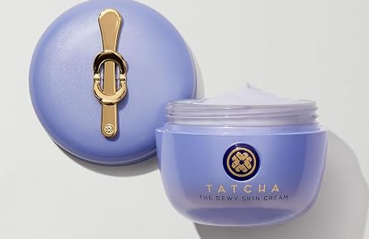

TATCHA The Dewy Skin Cream: ¿Vale la pena esta crema de lujo?
El problema: Las pieles secas o mixtas deshidratadas suelen verse opacas, con líneas de expresión marcadas y maquillaje que se "cuartea".
La solución: Presentamos a una marca de crema para la piel llamada The Dewy Skin Cream como un producto de culto en el mundo del skincare de lujo, famoso por dar el efecto de "piel de cristal" (glass skin) al instante.
1. Ingredientes Estrella y su Ciencia (¿Por qué funciona?)
- Arroz Morado Japonés: Altamente rico en antioxidantes (antocianinas). Ayuda a la piel a recuperarse del estrés ambiental y del daño UV.
- Mezcla de Algas y Ácido Hialurónico: Captura la humedad y rellena las líneas finas desde adentro, dando el efecto line-plumping.
- Hadasei-3 (Patente de Tatcha): Un complejo de té verde, arroz y algas fermentadas que aporta aminoácidos esenciales para una textura suave.
2. Textura y Experiencia de Uso
Es una crema rica, densa y cremosa, pero que se funde como agua al contacto con la piel sin dejar sensación grasosa (siempre que se use la cantidad adecuada).
Acabado Hidratante
Deja un acabado luminoso/brillante (dewy), ideal como prebase de maquillaje para que la base no se cuartee.
3. Pros y Contras (Honestidad completa)
La elección de tu crema no debe tomarse a la ligera. Recuerda que el cuidado de nuestra piel es importante para nosotras.
Ventajas:
- Hidratación de larga duración que se mantiene todo el día.
- Restaura la barrera de la piel gracias a su aporte de ceramidas.
- Ingredientes limpios, libre de crueldad animal y parabenos.
Desventajas:
- Precio elevado por ser gama de lujo (aunque tiene una versión económica de 15ml por 25$).
- Puede ser demasiado pesada para pieles grasas o con tendencia al acné.
- Contiene una fragancia muy sutil (un contra para pieles extremadamente sensibles).